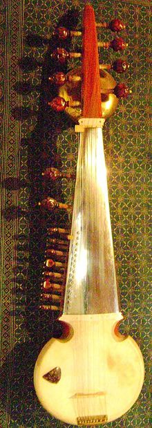
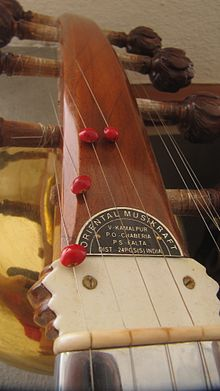

The sarod (or sarode) (सरोद) is a stringed instrument of India, used mainly
in Indian classical music. Along with the sitar, it is among the most popular
and prominent instruments in Hindustani classical music.
The sarod is known for
a deep, weighty, introspective sound, in contrast with the sweet, overtone-rich
texture of the sitar, with sympathetic strings that give it a resonant,
reverberant quality. It is a fretless instrument able to produce the continuous
slides between notes known as meend (glissandi), which are important in Indian
music.
Origins:
The sarod is believed by some to have descended from the Afghan rubab, a similar
instrument originating in Central Asia and Afghanistan.
The word sarod roughly translates to "beautiful sound" or "melody" in Persian,
one of the many languages spoken in Afghanistan. Although the sarod has been
referred to as a "bass rubab" its tonal bandwidth is actually considerably
greater than that of the rubab, especially in the middle and high registers.
Lalmani Misra opines in his Bharatiya Sangeet Vadya that the sarod is a
combination of the ancient chitra veena, the medieval rubab and modern
sursingar. There is also speculation that the oud may be the origin of the
sarod.
Among the many conflicting and contested histories of the sarod, there is one
that attributes its invention to the ancestors of the present-day sarod maestro,
Amjad Ali Khan. Amjad Ali Khan’s ancestor Mohammad Hashmi Khan Bangash, a
musician and horse trader, came to India with the Afghan rubab in the mid-18th
century, and became a court musician to the Maharajah of Rewa (now in Madhya
Pradesh).
It was his descendants, notably his grandson Ghulam Ali Khan Bangash,
a court musician in Gwalior, who changed the rubab into the sarod we know
today.A parallel theory credits descendants of Madar Khan, Niyamatullah Khan in
particular, with the same innovation around 1820. The sarod in its present form
dates back to approximately 1820, when it started gaining recognition as a
serious instrument in Rewa, Shahjahanpur, Gwalior and Lucknow.
In the 20th
century, the sarod received some finishing touches from Allauddin Khan, the
performer-pedagogue from Maihar best known as sitarist Ravi Shankar's guru.
However, as is the case with most young, evolving instruments, much work remains
to be done in the area of sarod luthiery in order to achieve reliable
customization, and precise replication of successful instruments. This reflects
the general state of Indian instrument-making in the present day
Design:

The design of the instrument depends on the school (gharana) of playing. There
are three distinguishable types:
The conventional sarod is a 17 to 25-stringed lute-like instrument four to five
main strings used for playing the melody, one or two drone strings, two chikari
strings and nine to eleven sympathetic strings. The design of this early model
is generally credited to Niyamatullah Khan of the Lucknow Gharana as well as
Ghulam Ali Khan of the Gwalior-Bangash Gharana.
Among the contemporary sarod
players, this basic design is kept intact by two streams of sarod playing. Amjad
Ali Khan and his disciples play this model, as do the followers of Radhika Mohan
Maitra. Both Amjad Ali Khan and Buddhadev Dasgupta have introduced minor changes
to their respective instruments which have become the design templates for their
followers. Both musicians use sarods made of teak wood, and a soundboard made of
goat skin stretched across the face of the resonator. Buddhadev Dasgupta prefers
a polished stainless steel fingerboard for the ease of maintenance while Amjad
Ali Khan uses the conventional chrome or nickel-plated cast steel fingerboard.
Visually, the two variants are similar, with six pegs in the main pegbox, two
rounded chikari pegs and 11 (Amjad) to 15 (Buddhadev) sympathetic strings.
The
descendants of Niyamatullah Khan (namely Irfan Khan and Ghulfam Khan) also play
similar instruments. Some of the followers of Radhika Mohan Maitra still carry
the second resonator on their sarods. Amjad Ali Khan and his followers have
rejected the resonator altogether. These instruments are typically tuned to B,
which is the traditional setting.
Another type is that designed by Allauddin Khan and his brother Ayet Ali Khan.
This instrument, referred to by David Trasoff as the 1934 Maihar Prototype, is
larger and longer than the conventional instrument, though the fingerboard is
identical to the traditional sarod.
This instrument has 25 strings in all. These
include four main strings, four jod strings (tuned to Ni or Dha, R/r, G/g and Sa
respectively), two chikari strings (tuned to Sa of the upper octave) and fifteen
tarab strings. The main strings are tuned to Ma ("fa"), Sa ("do"), lower Pa
("so") and lower Sa, giving the instrument a range of three octaves.
The Maihar
sarod lends itself extremely well to the presentation of alap with the four jod
strings providing a backdrop for the ambiance of the raga. This variant is,
however, not conducive to the performance of clean right-hand picking on
individual strings. The instrument is typically tuned to C.
Sarod strings are either made of steel or phosphor bronze. Most contemporary
sarod players use German or American-made strings, such as Roslau (Germany),
Pyramid (Germany) and Precision (USA).
The strings are plucked with a triangular
plectrum (java) made of polished coconut shell, ebony, cocobolo wood, horn,
cowbone, Delrin, or other such materials. Early sarod players used plain wire
plectrums, which yield a soft, ringing tone.

Playing technique:
The lack of frets and the tension of the strings make the sarod a very demanding
instrument to play, as the strings must be pressed hard against the fingerboard.
There are two approaches to stopping the strings of the sarod. One involves
using the tip of one's fingernails to stop the strings, and the other uses a
combination of the nail and the fingertip to stop the strings against the
fingerboard.
Fingering techniques and how they are taught depends largely on the personal
preferences of musicians rather than on the basis of school affiliation. Radhika
Mohan Maitra, for example, used the index, middle and ring finger of his left
hand to stop the string, just like followers of Allauddin Khan do. Maitra,
however, made much more extensive use of the third fingernail for slides and
hammers.
Amjad Ali Khan, while a member of approximately the same stylistic
school as Radhika Mohan, prefers to use just the index and middle fingers of his
left hand. Amjad Ali is, however, pictured circa 1960 playing with all three
fingers.